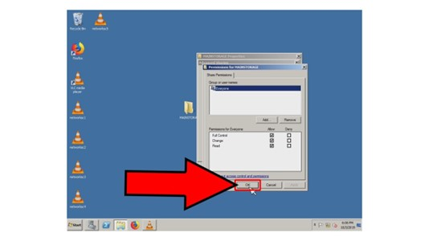

Performing Network Services
INTRODUCTION
When you are managing a NOS or Network Operating System, you should know there are different network services that are available.
These services need to be configured so that communication will flow easily within the network.
You are expected to learn most of these network services and configure them.
There are seven basic network services that you need to be familiar with: remote access, domain controller, web services, database services, proxy server, file services, and printer services.
We will go through each of these through this lesson.
Remote Access
Remote access technology enables one to login to a system as an authorized user without being physically present at the keyboard. This is common in corporate computer networks.
One of the most common form of remote access is the remote desktop. This basically allows a server computer can control with the actual desktop user interface of another computer.
To setup a remote desktop, both the host and target (controlling computer and remote computer to be accessed) need to be installed certain software.
Domain Controller
This service is one of the most used on a Windows network. It enables one to realistically assess operational requirements and server performance for each computer.
It responds to security authentication requests and the like that need verification from the host for many security and validation doors across the network.
Web Services
Having a web server enables hosting among websites and web-based applications. Both static and dynamic content can be hosted on a Web server.
Several web applications that have many roles and functions can also be hosted using ASP.NET and .NET Framework 3.0, among others.
Database Services
A database server is a computer program that offers database services to other computer programs or computers, as seen in the client–server model.
The term may also refer to a computer dedicated to running such a program. Database management systems frequently provide database server functionality.
Proxy Server
In computer networks, a proxy server is a server (a computer system or an application) that acts as a middle-ground for requests from clients seeking resources from other servers.
A client connects to the proxy server, requesting some service, such as a file, connection, web page, or other resource available from a different server and the proxy server evaluates the request to simplify and control its complexity.
Proxies were created to add structure and encapsulation to distributed systems.
File Services
The file services role provides essential services for managing files and the way they are made available and replicated on the network.
Several server roles require some type of file service.
Includes these role services and subservices: File Server, Distributed File System, DFS Namespace, DFS Replication, File Server Resource Manager, Services for Network File System (NFS), Windows Search Service, Windows Server 2003 File Services, File Replication Service (FRS), and Indexing Service.
Print Services
For print servers, this resource type provides for high availability of network-attached print devices. Printers connected directly to print servers cannot be included because there is no way to fail over control to a different server.
If a print server fails, all jobs that are currently spooling are restarted. Jobs that are in the process of spooling are discarded and must be re-spooled or reprinted to the Print Spooler resource.
Performing basic network service configuration.
You will be needing a computer installed with Windows Server 2008 R2 operating system to perform the following procedures.
Steps/Procedure:
- Task 1: Install DHCP and File Services
-
-
In Server Manager, select Role; then select Add Role in the right pane
-
Follow the series of steps provided in the wizard
- Tick “DHCP Server” and “Files Services”
- Read the installation guide and follow the steps carefully
- Note: Always validate the IP Address; set the IP range after the installation
- Task 2: Make a Group Policy Management
-
- Go to “Features”, Group Policy Management, Forest, Domain
- Right click on Domains and choose Create a GPO in this domain
- Write a GPO name and click OK
- Unchecked Link Enabled
- On Security Filtering, click Add and Insert Everyone
- Close the Server Manager to refresh
- Task 3: Create DHCP (IP Scope)
-
- Select Roles, DHCP Server, (domain), right-click on IPv4 and select New Scope
- Write a new scope name
- Set your IP Address range
- Skip on IP add Exclusions
- Set Lease Duration
- Choose YES for Configure DHCP Options
- Skip on the next procedures
- Activate the scope now
- Task 4: Create Folder Redirection
-
- Select “Features”, Group Policy Management, Forest, Domains, (Domain name), right-click on Policy, choose Edit
- Choose User Configuration
- Choose Policies
- Choose Window Settings
- Choose Folder Redirection
- Choose your directory to be directed, right-click and select Properties
- Target Settings: Choose Basic
- Under Root Path, type the share name of your folder
- Click OK
Folder Sharing
Follow the step-by-step procedures on how to configure folder sharing where folders across a network are shared to all connected devices.

Folder Redirection
Remote Desktop Configuration